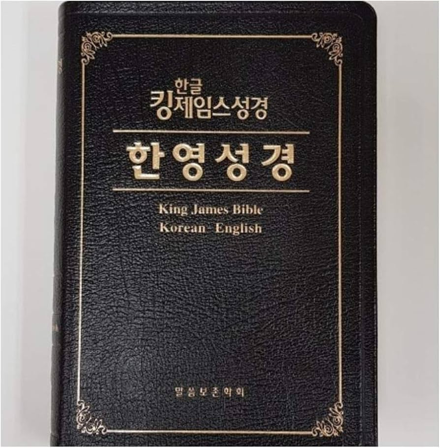

이야기의 끝
예수님의 제자로서 어떤 시련을 겪더라도, 우리는 하나님께서 역사를 주관하고 계신다는 확신을 가집니다. 하나님은 이야기의 끝을 아시며, 그 끝은 언제나 위안과 기쁨의 원천입니다.
요한계시록
요한계시록은 사도 요한이 그리스의 파트모스 섬에서 유배 중 받은 환상의 기록입니다. 아마도 성경에서 가장 읽기 어려운 책 중 하나일 것입니다. 이 책은 예수님의 추종자들에 대한 큰 박해가 있었던 시기에 쓰여졌으며, 많은 학자들은 요한의 시대 독자들이 잘 이해할 수 있도록 특별한 코드로 작성되었을 것이라고 믿습니다. 일부는 요한계시록에 묘사된 많은 환상이 이미 이루어졌다고 생각합니다.
하지만 구약의 선지자들과 마찬가지로 요한도 아직 오지 않은 일들에 대한 환상을 보았을 가능성이 있습니다. 예를 들어, 세상의 악의 원천인 사탄은 영원히 정복당하는 것으로 묘사됩니다. 그러나 현재 세상에 여전히 악이 존재하므로, 이 예언은 아직 성취되지 않았습니다.
요한계시록의 상징성과 이미지를 이해하기 어려운 경우가 있지만, 적어도 한 번은 꼭 읽어보아야 합니다. 요한계시록 1:3은 이 책을 읽는 이들에게 축복을 약속합니다. 일곱 교회에 대한 편지(요한계시록 2-3)는 현대 교회에도 여전히 많은 메시지를 전달합니다. 또한 구약의 선지자들에 대한 독서를 해본 적이 있다면, 그들의 글쓰기 스타일과 유사성에 흥미를 느낄 것입니다.
요한계시록의 다른 부분은 읽지 않더라도, 마지막 장인 22장은 반드시 읽어야 합니다. 그 안에서는 하나님과 함께 영원한 집으로 나아갈 때 우리를 기다리는 큰 희망을 발견할 수 있습니다.